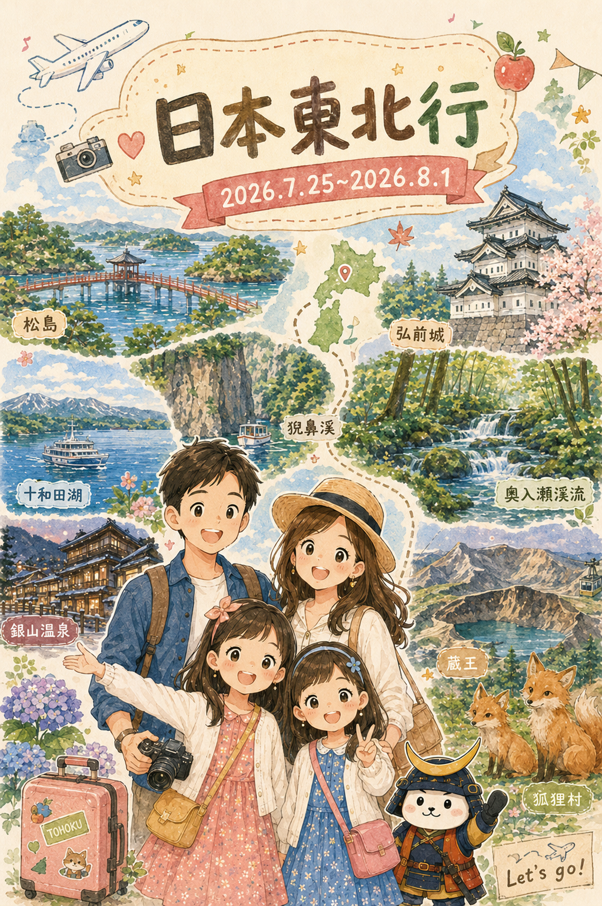
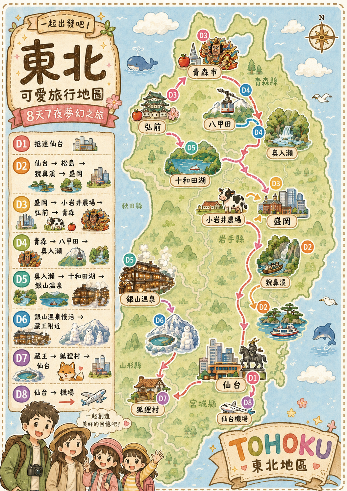
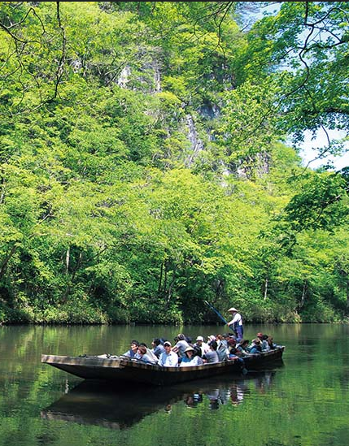
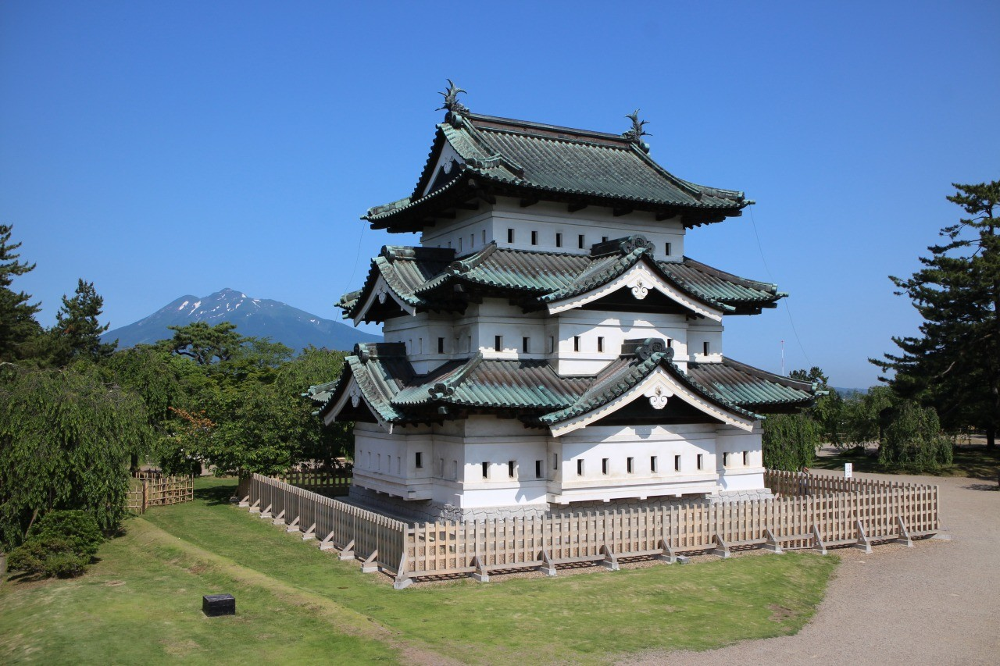
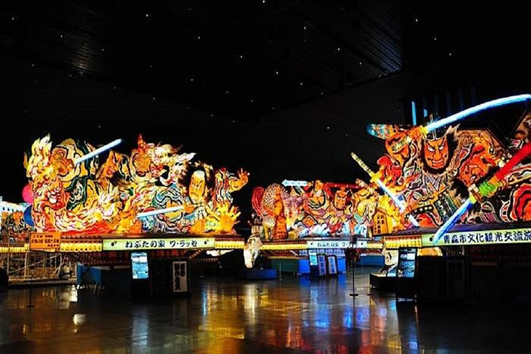
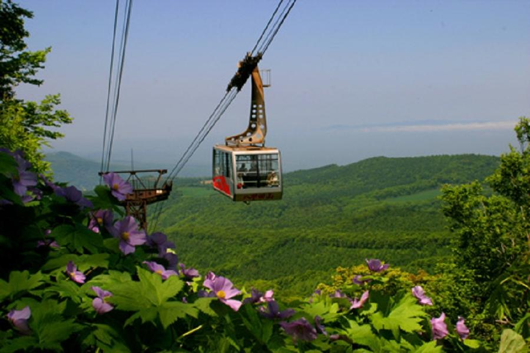
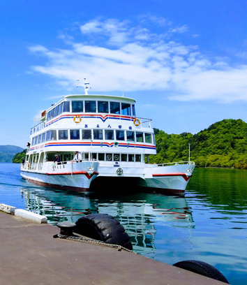
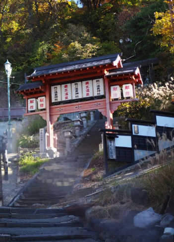

仙台機場是這趟東北旅程的入口。完成入境、領行李後，沿著 2 樓連通橋就能到仙台空港站。機場和火車站連在一起，像旅行第一條不必淋雨的空中走廊。
到了怎麼走：國際線抵達大廳 → 中央廣場 → 2 樓連通橋 → 仙台空港站；搭往仙台方向列車約 17–24 分。

點選每天的行程卡，快速查看當天景點、車程與住宿。

| 11:35 | JX862 台北桃園一航起飛 |
|---|---|
| 16:00 | 抵達仙台機場，完成入境、領行李與網路確認（搭 Access 線約 17–24 分：仙台空港站 → 仙台站） |
| 17:15 | 仙台站西口出站，步行約 3–5 分到飯店辦入住 |
| 18:30 | 仙台站、百貨與周邊散步 |
| 19:00 | 晚餐：Kotora S-PAL Sendai（已訂位） |
仙台機場是這趟東北旅程的入口。完成入境、領行李後，沿著 2 樓連通橋就能到仙台空港站。機場和火車站連在一起，像旅行第一條不必淋雨的空中走廊。
到了怎麼走：國際線抵達大廳 → 中央廣場 → 2 樓連通橋 → 仙台空港站；搭往仙台方向列車約 17–24 分。

仙台站把新幹線、JR、地下鐵、百貨和餐廳收在一起，是東北最忙碌的交通中心之一。先記住東口、西口，後面購物、吃晚餐和回機場時，就像已經認識這座城市的方向盤。
到了怎麼走：從東口依飯店指標走，Hotel Metropolitan Sendai East 與車站連通；先放行李，再到 S-PAL 周邊吃牛舌。
| 08:30 | 仙台辦理取車；確認 ETC 卡、導航、兒童座椅與油量（開車約 45–60 分：仙台 → 松島中央觀光桟橋停車場） |
|---|---|
| 10:00 | 松島仁王丸遊覽船（約 50 分） |
| 10:50 | 五大堂、瑞巖寺外圍散步；午餐改成快速用餐或外帶（開車約 1 小時 35 分：松島 → 猊鼻溪觀光中心） |
| 14:00 | 猊鼻溪舟遊（來回約 90 分），聽船夫歌、走折返岸邊（開車約 1 小時 45 分：猊鼻溪 → 盛岡站前飯店） |
| 17:30 | 飯店入住、稍作休息；18:30 再去吃盛岡冷麵 |

仁王丸從海上帶你看松島，許多小島像散在海上的綠色積木。五大堂通往小島的橋板有縫隙，走過時要慢慢看腳下；瑞巖寺則留下伊達家時代的寺院故事。海景、建築和歷史就在同一段步道裡。
到了怎麼走：停車後先到中央觀光桟橋確認船班；下船沿海邊步道走五大堂，再往瑞巖寺外圍。

猊鼻溪的船不是用馬達急衝，而是船夫用長竿慢慢撐。兩側石灰岩壁高高站著，水聲、鳥聲和船歌會讓速度自然慢下來。找找看岩壁的裂縫與顏色，想像河水花了多久才把山切成溪谷。
到了怎麼走：導航到げいび観光センター，提早 20 分鐘集合；舟程來回約 90 分鐘，結束後直接開往盛岡。
| 09:00 | 盛岡站前飯店出發（開車約 30–35 分：盛岡 → 小岩井農場） |
|---|---|
| 09:40 | 小岩井農場散步、看牛舍與草原；11:30 前往餐廳午餐（開車約 1 小時 50 分：小岩井農場 → 弘前公園） |
| 14:00 | 弘前公園：追手門 → 護城河 → 天守；夏季可走樹蔭路線（開車約 55 分：弘前 → 青森市區飯店） |
| 17:15 | 抵達青森飯店、辦入住；附近散步或休息 |
| 18:30 | 晚餐：青森港 海の食堂 大福丸（已預約） |

小岩井農場的草地不是只為了拍照。牛吃牧草、牧草需要陽光與水，牛奶、起司和冰淇淋才會慢慢出現。走在農場裡時，找找遠方的岩手山、牛舍和不同顏色的草地，看看自然怎麼變成食物。
到了怎麼走：入口先拿園區圖，選牧場館、動物區和餐廳三個重點走；夏天記得帽子、防曬與水。

弘前城的天守不高，卻是東北少數保存下來的古城。護城河、石牆和彎曲入口都是以前保護城堡的方法。弘前也是蘋果重鎮，一份甜點背後要經過修枝、授粉、套袋和採收，好幾個季節才完成。
到了怎麼走：從追手門進弘前公園，沿護城河往天守；結束後回停車場開往青森港，18:30 到大福丸吃晚餐。
| 09:00 | 睡魔之家 WA RASSE，看大型祭典燈籠與影片（開車約 1 小時：青森市區 → 八甲田纜車） |
|---|---|
| 11:00 | 八甲田纜車：排隊、上山、觀景與下山；風大停駛就改山麓散步 |
| 12:20 | 八甲田周邊午餐，出發前確認油量與山路天候（開車約 1 小時 10 分：八甲田 → 奧入瀨銚子大瀑布） |
| 14:15 | 奧入瀨溪流散步：銚子大瀑布周邊，走一段後回車 |
| 16:15 | 離開溪流前往十和田湖畔飯店（開車約 30 分：奧入瀨 → 十和田湖畔櫻樂） |
| 17:00 | 飯店入住、泡湯或湖畔散步；18:00 館內晚餐 |

睡魔祭的巨大燈籠不是印出來的海報，而是先做鐵絲骨架，再貼和紙、上色、從裡面點燈。WA RASSE 把夏天夜晚才會上街的睡魔搬進館內，讓你白天也能靠近看它有多大、多亮、多有力量。
到了怎麼走：館就在青森站旁，先看大型睡魔，再到商店區找蘋果與祭典小物；別忘記觀察燈籠的表情和衣服細節。

纜車把大家從山腳拉到高處，窗外的樹冠像一大片綠色地毯。夏天的八甲田沒有雪怪，只有潮濕森林、涼風和快速變化的雲。把手貼在玻璃旁，試著找出道路、山谷和遠方的湖。
到了怎麼走：出發前看風速與運行公告；停駛時改在山麓散步，不勉強上山。

奧入瀨的水從十和田湖流出，沿路穿過苔蘚、石頭、倒木和小瀑布。每一段水流速度不同：窄的地方變快，遇到落差就變成瀑布。這是一座不用黑板的自然教室，只要用眼睛和耳朵慢慢觀察。
夏天最有趣的是找三種不同的綠色：苔蘚的綠、樹葉的綠和水面反射出的綠。不要折植物，也不用撿石頭回家，讓它們繼續留在溪邊當下一位旅人的發現。
到了怎麼走：以銚子大瀑布附近為起點最容易辨識；車停合法停車區後走步道，石頭潮濕時不要靠水邊。
| 08:45 | 退房後走奧入瀨溪流未完成路段，控制在 60–75 分鐘（開車約 30 分：奧入瀨 → 十和田湖休屋碼頭） |
|---|---|
| 10:45 | 抵十和田湖畔、停車與確認遊覽船班次 |
| 11:00 | 十和田湖遊覽船，欣賞湖面與山景 |
| 12:00 | 湖畔午餐：十和田烤牛五花或在地料理（開車約 5 小時：十和田湖 → 銀山溫泉停車／接駁區；含 2 次休息） |
| 18:00 | 抵銀山溫泉，依旅館指示停車或接駁、辦理入住 |
| 19:00 | 能登屋旅館晚餐 |

早上的奧入瀨比下午安靜，適合補走前一天沒走完的路。看一看同一條溪在陽光和樹蔭下顏色怎麼變；水不是只有透明，它會把天空、樹葉和石頭的顏色一起帶走。
到了怎麼走：退房前只挑一小段走，留出回車、上洗手間與開往碼頭的時間。

十和田湖位在火山活動形成的大凹地裡，從船上看起來像被群山抱住的一面大鏡子。近岸的水色和湖中央不同，因為水深、光線和天空反射都在改變。把這趟船當成認識火山湖的慢速課。
到了怎麼走：到休屋碼頭先確認班次；船前後在湖畔吃午餐，不要壓縮下午長途車程。

銀山溫泉的名字來自以前的銀礦。礦山慢慢淡出後，木造旅館、河道和溫泉留下來，變成今天的溫泉街。傍晚燈亮起來時，屋簷和橋像老電影場景；白天則最適合看清木頭、窗框和河水的細節。
試著選一棟旅館觀察：它有幾層窗？河水往哪一邊流？橋為什麼要蓋在這裡？這些小問題能把一張漂亮照片變成你真的記得的地方。
到了怎麼走：車子依旅館指示停在外圍停車區或搭接駁，進溫泉街後用走的；晚上小聲走路，尊重住宿旅客。
| 09:00 | 銀山溫泉老街晨間散步：河道、白銀橋、木造旅館 |
|---|---|
| 10:30 | 退房；溫泉街午餐或外帶上車（開車約 2 小時 15 分：銀山溫泉 → 藏王溫泉季の里） |
| 13:15 | 沿途休息站補水、加油，進入藏王山路 |
| 15:00 | 抵達季の里辦理入住；確認隔日御釜道路與天氣 |
| 16:00 | 溫泉街小散步或旅館泡湯，保留體力 |
| 18:30 | 旅館內晚餐，早點休息 |

晚上看燈，白天看結構。你可以數數一棟旅館有幾層窗、橋下的水流往哪裡去，還能找出老街為什麼把路留得窄窄的。這裡不是大型購物街，慢下來才會看到它真正的樣子。
到了怎麼走：退房後沿河散步到白銀橋一帶，再回停車或接駁處；行李先放好，街道才好走。

藏王的地下仍有地熱，雨水滲進地底被加熱、帶著礦物質再湧出，就成了溫泉。今天泡湯和明天看御釜其實是一套地球故事：一個在地底的熱，一個是火山口留下的湖。
到了怎麼走：進山前先加油、準備外套與暈車藥；到旅館後確認隔天道路與天候。
| 08:30 | 由藏王溫泉出發，上 Eco Line 往御釜 |
|---|---|
| 09:30 | 御釜火口湖觀景、拍照與步道短走 |
| 10:45 | 下山前往白石方向用午餐（開車約 1 小時 20 分：御釜 → 宮城藏王狐狸村） |
| 12:30 | 白石周邊午餐：白石溫麵或簡餐 |
| 13:30 | 宮城藏王狐狸村，依園方規則觀察狐狸（開車約 1 小時 30 分：狐狸村 → 仙台站東口） |
| 16:30 | 抵仙台飯店入住、還車前確認油量與租車分店 |
| 19:00 | 晚餐：牛たん料理 閣 名掛丁店（已預約） |

御釜的名字像煮飯的鍋，因為它在火山口裡圓圓地裝著湖水。湖色有時像綠松石，有時被雲霧遮住，這不是它在變魔術，而是光線、天氣和水中成分一起造成的效果。
到了怎麼走：上 Eco Line 前查道路與能見度；山頂風大時不要靠近邊緣，濃霧就改走備案。

狐狸有尖耳朵、蓬鬆尾巴和很快的警覺反應，但牠們不是玩偶。最棒的觀察方式是安靜站著，看牠用鼻子聞、耳朵轉、尾巴擺，猜猜牠是在找食物、休息，還是在注意同伴。
到了怎麼走：先讀園方規則；不追逐、不伸手摸、不把食物靠近臉，保持距離就是喜歡牠們的方式。

從山上的御釜、狐狸村回到仙台站，會很明顯感到旅行的節奏變快：車、火車、百貨與人群都集中在一起。把租車油量、行李和晚餐地點先排好，最後一晚就能從容享受牛舌。
名掛丁商店街靠近仙台站，是晚餐前可以慢慢散步的地方。抬頭看招牌、聽店門口的招呼聲，想想同一座城市白天和晚上怎麼換了表情。
到了怎麼走：入住 Hotel Metropolitan Sendai East 後，走車站連通區到名掛丁；19:00 前抵達牛たん料理 閣 名掛丁店。
| 09:00 | 照下一頁「仙台車站購物地圖」分區採買；角色商品先買 |
|---|---|
| 11:45 | 仙台站周邊午餐：牛舌、車站便當或毛豆泥甜點 |
| 12:45 | 回飯店取行李、最後整理購物袋 |
| 13:30 | 開車前往仙台機場租車店還車（開車約 35–45 分：仙台站 → 仙台空港租車店；還車接駁另抓 15–20 分） |
| 14:30 | 抵航廈辦理報到、托運與出境；最後採買放在安檢後 |
| 17:20 | JX863 仙台起飛，20:10 抵達台北桃園一航 |
相對位置示意，北向上；先由住宿出發，最後回仙台站東口取車前往機場。